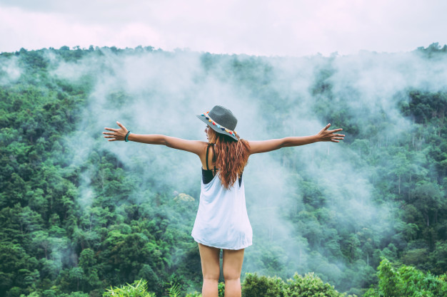

Have you ever wondered why you travel? Someone travels for new acquaintances, someone wants to just lie by the sea and do nothing, and another on the contrary actively walks through new cities and streets from morning till night with a list of sights, someone studies the culture, someone is shopping. But if we combine all these goals, we realize that the main reason to travel is to get new emotions and inspiration.
When you travel you can get not only the effect of recovery, but something more, a complete reset of your worldview, a change in ways of thinking, habits and even character.
Travel helps you to discover what was hidden behind the drabness of everyday life, to expand your consciousness, to realize your dreams. Travel should become an integral part of everyone’s life. In every trip you can make new acquaintances, new friends, business partners. Thanks to travel you grow, reach a new level of your personal development.
The main benefit of travel is that a person, leaving his familiar environment, loses those factors and their power that affect him daily. While on vacation, he starts his life with a clean slate:
Observe yourself when you find yourself in a new place. You're bound to notice that your thoughts flow differently. You are relaxed and think about things that are not what you used to think in the hustle and bustle of weekdays. In the process of relaxation, a person receives an invaluable experience that translates into opportunities for development in every area of his life. We think differently and let in a new image of ourselves.
They say you only need 3 things for happiness:
And most often due to lack of time, business problems, money issues, we put off traveling for later. And life in a mode “work-home” creates a vicious circle. On the one hand we have no time to rest, on the other hand the lack of rest makes it impossible to work well, get inspiration and make plans to achieve new victories. So it is urgent to get out of this circle.
And also, the sense of beauty that we get when we travel encourages us to work better and harder. And it’s a proven fact. According to a Stanford University study, the sense of beauty motivates people to think about the well-being of all. The ability to admire, the desire to surround ourselves with beauty and aesthetics, is directly linked to our personal development and the evolution of humanity as a whole.
Back